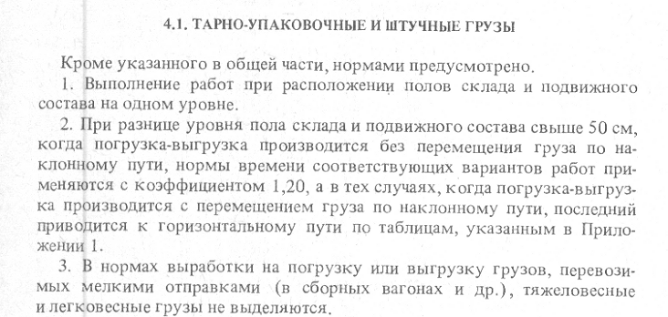

4.1.1. Погрузка или выгрузка тарно-упаковочных и штучных грузов в железнодорожные вагоны и автотранспорт 4.1.2. Погрузка и выгрузка тарно-упаковочных и штучных грузов на платформу, в крытый вагон, на автомобиль